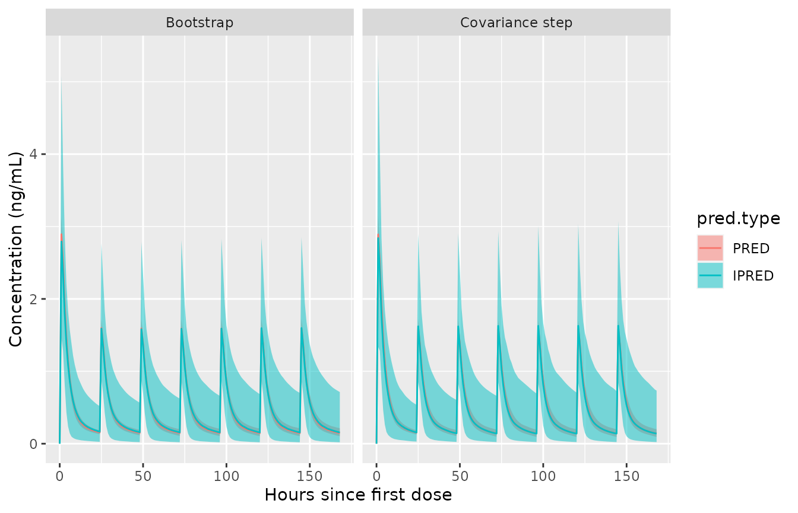

Simulation with Parameter Uncertainty
Source:vignettes/NMsim-ParamUncertain.Rmd
NMsim-ParamUncertain.RmdObjectives
This vignettes aims at enabling you to use NMsim for the
following purposes
- Simulation with parameter uncertainty
- By sampling from a successful covariance step
- By using models from bootstrap sampling
Simulation of parameter uncertainty
We already saw how NMsim can easily be used to generate
new subjects (for say prediction intervals) by using the between-subject
and between-occasion variability as described by the model. We may also
want to simulate the uncertainty of the parameter estimates (for say
confidence intervals). NMsim supports two different
approaches to this.
Simulation based on the estimated variance-covariance matrix of the parameters as estimated by a successful
$COVARIANCEstep in Nonmem. This method is specified with the argumentmethod.sim=NMsim_VarCov.Simulation based on a bootstrap of the model. NMsim cannot do the bootstrap. But with a bootstrap at hand,
NMsim()can reuse the bootstrapped models for simulation. This is obtained by simply runningNMsim()on multiple estimated models. This requires that the sampled bootstrap models must be available. The example below is based on results fromPSN’s bootstrap function.
It must be noted that the current implementation based on the
$COVARIANCE step does not simulate the $OMEGA
and $SIGMA parameters from the correct distribution. For
typical value simulations, this limitation will not affect the results.
The forest plot is an example where typical subject estimates simulated
with parameter uncertainty. If the post-processing involves statistics
across simulated populations ($OMEGA) or residual error
($SIGMA), this method should be used for preliminary
analyses.
It beyond the scope of this vignette to describe further pros and
cons of the two approaches. The following examples serve to exlain the
prerequisites for using NMsim to do it, and how to get
NMsim to do the job.
Simulation of parameter uncertainty based on a covariance step
If you have a succesful covariance step from Nonmem,
NMsim can sample models from the estimated
variance-covariance matrix. Again, NMsim does not derive
confidence intervals based on the estimated variance-covariance matrix.
It samples models from it, and then you can derive the desired
confidence intervals, or whatever you need.
Again, we shall try not to get too far into details here, but remember what we are doing here. We are assuming that the estimated vairance-covariance matrix is a reliable estimate of the parameter precision, implying Gaussian distribution of all parameter uncertainties. The reason this is important to understand is that depending on the model, this can lead to samples of parameter values beyond some allowed range. This can lead some of the sampled models to fail or not be meaningful. The point here is that a successful covariance step may not be a sufficient criterion for picking this approach to simulating uncertainty; appropriate parametrization is another one.
Anyway, getting NMsim to do the work is as simple as
this:
set.seed(552)
simlsts.VarCov <- NMsim(
file.mod=file.mod, ## Path to estimation input control stream
data=dat.sim ## simulation input data
,dir.sims="~/NMsim_vignette/tmp" ## where to store temporary simulation files
,dir.res="simulate-results" ## where to store simulation results files
,table.vars="PRED IPRED" ## Let Nonmem write a minimum output table
,method.sim=NMsim_VarCov ## Var-Cov parameter sampling
,name.sim="VarCov" ## a recognizable directory name
,nsims=500 ## sampling 500 models
,sge=TRUE ## run simulations in parallel please
)You may get messages like “Unable to run job” and that the job “is not allowed to run in any queue”. Counter-intuitively to most, these messages do not mean that the job isn’t run.
We used sge=TRUE which means we are sending the 1000
generated jobs to the queuing system. In this case, NMsim
does not track the execution of the jobs and does hence not collect the
results once they are done. Instead it returns a small data.frame with
the paths to where all the simulation output control streams will be
written. You have to check the status of the jobs manually, and once
they are all done, you can read all the results using
NMreadSim():
simres.VarCov <- NMreadSim("simulate-results/NMsim_xgxr032_VarCov_paths.rds")We now have simulation results from 1000 sampled models collected. We shall do the same with the models sampled in a bootstrap, and then we will calculate confidence intervals based on both methods.
Simulation from a bootstrap
The other approach to simulation with parameter uncertainty currently
provided by NMsim is simulation from a bootstrap. Again,
NMsim does not run a bootstrap, it simply runs a simulation
using each of the sampled models from a bootstrap. In fact this means we
don’t even need a dedicated method to achieve this, we simply run a
simulation with multiple Nonmem models as described in the begging of
this vignette. We used PSN’s bootstrap. We can run the
simulation on all the models this way:
## generate a vector with paths to all the input control streams
mods.bootstrap <- list.files(path=file.project("nonmem/bs1_032_N1000/m1"),
pattern=".+\\.mod$",full.names = T)
## number of models to be run
## length(mods.bootstrap)
file.res.bootstrap <- NMsim(
file.mod=mods.bootstrap ## Estimation input control stream
,data=dat.sim ## Simulation input data
,method.sim=NMsim_default ## a single simulation with each sampled model
,dir.sims="~/NMsim_vignette/bootstrap" ## Where to save simulation results
,file.res="simulate-results/simres_bootstrap.rds"
,table.vars="PRED IPRED" ## Let Nonmem write a minimum output table
,sge=TRUE ## run simulations in parallel
,method.update.inits="nmsim"
)
simres.bootstrap <- NMreadSim("simulate-results/simres_bootstrap.rds")NMsim keeps a column by default called
model which holds the model name, derived from the control
stream file name. This behavior is due to NMsim relying on
the functionality implemented in NMdata for reading and
writing data. Using NMdata::NMscanData. As an example, we
can derive an estimated confidence interval of the population prediction
against time by summarizing across the simulation models (samples).
The confidence intervals
Derivation of the confidence intervals is identical for the two
methods, so we do it at once using data.table’s by feature
to separate the two methods (sampling from covariance steps and using
the bootstrap samples).
## Stacking results from the two approaches to simulating with
## parameter uncertainty.
allres <- rbind(simres.VarCov[,method:="Covariance step"],
simres.bootstrap[,method:="Bootstrap"],
fill=TRUE)
## long format so calculations can be done by prediction type.
allresl <- melt(allres[EVID==2],
measure.vars=c("PRED","IPRED"),
variable.name="pred.type",
value.name="pred.value")
## deriving median by model and time to have a single value per model
## and time point. This is only needed in case multiple subjects are
## simulated by each model.
sum.res.model <- allresl[,
.(predm=median(pred.value))
,by=.(method,model,TIME,pred.type)]
sum.uncertain <- sum.res.model[
,setNames(as.list(quantile(predm,probs=c(.025,.5,.975))),
c("predml","predmm","predmu"))
,by=.(method,TIME,pred.type)]Plotting the two next to each other. For this simple model with a smooth covariance step the two confidence intervals are very similar. If you look hard, you can see minor differences.
ggplot(sum.uncertain,aes(x=TIME,fill=pred.type))+
geom_ribbon(aes(ymin=predml,ymax=predmu),alpha=.5)+
geom_line(aes(y=predmm,colour=pred.type))+
labs(x="Hours since first dose",y="Concentration (ng/mL)")+
facet_wrap(~method)